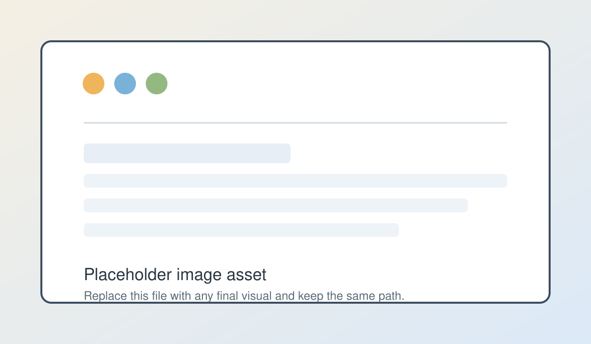

Possibilities, or Learning to Draw Again With AI
An essay on divergence, taste, and visual exploration in AI-native design workflows
The Funnel
CLI based AI tooling serves as an idea funnel. Little does it matter how broad your research or how many creative kernels you approach a project with. The second you begin prompting, you compress this wealth of possibility into one tenuous line. Once that first prompt is sent, the rest of the project rides this straight line: input, output, refine, and so on. That space of latent possibility that existed right before you involved the LLM is lost, and there is no real way to replicate it further into the process.
This is anathema to design. Design is about exploring a massive space of possibility, of curating, of narrowing and then expanding again. You generate variations, look at them, draw from other sources, edit things, throw most of it away - that is how you arrive at something good. Current AI tools subvert this process: a perfect executor at your hands means you are expected to know what exactly to execute, at all times. They are not active collaborators. And so, you become a command issuer instead of a creative partner. Instead of using your imagination, you expend most of your mental energy crafting the ideal prompt, and hoping that the result reflects what you see in your mind.
This phenomenon is called premature convergence: you are collapsing the space of possibility before you have even really seen what is in it. It is why everything today looks and feels the same. In the absence of true exploration we are forced to pick from the swatches that are hardcoded into the system. These are more dull and muted than anything you could come up with if you had the right tools.
The Image that Understood Itself
I used to be a designer. I remember when software was designed on Photoshop and pixelated assets were our main artifact. Then the awkwardness of learning Sketch when it first did the rounds. And then the Figma revolution, which seemed like the end of history insofar as design tools went. The arrival of Claude Code shook my professional sense of self quite deeply - in short order I stopped using Figma, and started shipping code directly. This was an exciting time; it was the beginning of visual tools in the AI realm, and it seemed like every week a new workflow was being lauded as the solution to all our design woes. Under it all, Claude remained a sort of technological bedrock, the siphon through which everything I made eventually had to pass.
One day I was playing around in Flora, a tool meant for these generative visual workflows. On a whim, I gave it a React component's code to see if it could generate an image of the interface without relying on a browser's render engine. It was a sort of do you know what you are actually doing type test. To my surprise, it did a pretty good job. Later that summer, when I hit a creative block on a feature I was building, I used Nano Banana to generate ten variations of interface ideas in an effort to move forward. Nothing crazy, just images of what these ten interfaces could look like. It helped me get unstuck, and it was a revelation - these image models had a much closer relationship to code than I previously thought. I was working in code, but thinking in images, and the speed was phenomenal. This, I thought, was a pretty good idea.

Paper, Layers, Canvas
The process of exploring complex systems visually has a very long tradition in software engineering. Interface-like paper prototypes became standard practice at powerhouses like IBM, Microsoft, and Honeywell in the 80s and 90s. The insight was simple: using throwaway visual artifacts to explore how interfaces, and therefore code, could be structured, was an easy way to save time and produce better outcomes.
Then came Photoshop, and with it the concept of layers and canvases. Suddenly a complex spatial language was available to the designer, to be explored digitally and without fear of mistakes. You could, arguably for the first time, truly see and feel the interface of a program before it was created. Figma expanded on this immensely. Closer to code, and with a tighter language, Figma started blurring the barriers between design tools and software systems. It worked well because it was malleable enough to allow for the process while getting you closer to production.
And now we are all back in the terminal. In what seems like a victory for circular-time proponents, we have ended up back where we started. Agents, AI workflows, orchestration frameworks - the weight of text is enormous, and the pull to use it more so. Designers, to everyone's amazement and chagrin, now live in the codebase along with everyone else.
A recent Figma post talked about the need for design systems to further expand into lower-level concerns - an existential need to continue unifying the whole stack. And I think they are right, but I would go even further. The visual capabilities of AI systems, which I believe have been underutilized in software development, are now so capable that we can leapfrog over Figma into a much faster, intuitive, and cohesive space when it comes to software design in the age of AI. If we do not take this leap, then tools like Figma will invariably continue to be pulled towards code-first philosophies, and we risk genuinely losing the exploration phase of design entirely.
Taste is Selection
The fundamental shift is not about tools, but around the role of the designer. With the system we are proposing, you go from being a sole creator at the mercy of AI specificity, to being a creative director, a conductor, and a curator all in one. You are not making every pixel. You are articulating intent, guiding the generative process, and making choices from an array of possibilities that are presented to you. AI becomes a collaborator rather than an executor - an exploration engine, not a cold solution generator.
Soleio said it: Taste is selection. Scroll through variations. Pick and choose. Design nowadays is a sibling to browsing and scrolling. The language of inspiration is the board, except that it has always been fed to you with little space for your feedback. The idea is to subvert this: you have an idea, you generate plenty of throwaway images, and then you curate what you like. You edit, mark out parts that you like and do not like. You slowly pare down and converge to a more unified idea, and then branch out again, iterating as many times as you like.
The goal here is not to solve the tension between control and serendipity, rather it is to manage it dynamically. Many design systems share a sort of double diamond structure, reflective of a fundamental need to broaden and collapse the various inputs to the process multiple times in order to arrive at solid artifacts. In our system the double diamond is the driving metaphor, both visually and spatially - throughout the process, you can actually see this divergence and convergence happening. We think this creates an interesting feedback loop: an awareness of the design process, while you are engaging in it, creates a better process, which feeds into better work, and so on.
Learning to Draw Again
Why is this possible now? Agents are finally proficient at understanding images to an extent that allows for specific, nuanced adjustment and variation. They can look at a sketch, a screenshot, or a rough mockup, and produce a full interface from it, just as well as from Figma dev mode or any structured format. This begs the question: why are we still insisting on translating visual ideas into prose for terminal-based LLMs?
Text prompts strip out the most intuitive ways of communicating and exploring visual relationships and ideas. You are quite literally trying to describe something that does not live in language. It seems far more logical to meet AIs where they are at - when dealing with visual work, use their visual capabilities. Otherwise, you are basically trying to paint a painting by reading the artist a detailed list of instructions.
Some people are already trying to build towards this. Variant UI is working on parallel generation, scroll through variations, design as browsing. All of this we believe to be the right direction. Claude Code Playgrounds is another good example - visual feedback loops, and the ability to generate an artifact and iterate on it. Nonetheless, it is still a one-artifact experience, which prioritizes tiny, incremental refinement over deep and expansive exploration.
The gap that remains has to do with exploring maximal divergence as a set of possibilities and then grounding that in code. No one has really cracked this yet, but the pieces are there.
AI has drawn us back into the terminal, into the heart of the computer. Text is king. But by sticking to this paradigm we risk overlooking other abilities that have recently ballooned in capability, namely images. AI is now, by all accounts, very good at working with images. So why not lean into that? Why bother with a translation layer that distances us from the core of what we are interested in? A shift towards images is a shift closer to the source material, and with it, a broadening of design and creative possibilities. And ultimately, this is a shift back to the origins of design in software - by betting on images we are once again picking up the pencil, and setting a sheet of paper in front of us. We just need to learn to draw.